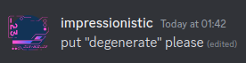

I (Idra) manage the staff team and do the majority of behind-the-scenes maintenance and administration.
The Host (Void) kindly provides our server hardware, free of charge. He has little involement in regular running of the server.
Admins handle the technical details of the server. Contact an Admin if you have a suggestion, find an issue, or need a refund.
Moderators keep chat civil and deal with issues such as griefing or hacking. Contact a moderator if you experience issues with another player or have a question.
Click here to apply
The Head Developer (Justin) leads programming projects to create new plugins, and sometimes other types of software.
Developers do much of the programming under supervision of the Head Developer.
Click here to apply
The Head Builder (Aria_Night) manages Builders and plans building projects, as well as organising events.
Builders design and build spawns and events under supervision of the Head Builder.
Click here to apply
Hello mortals. I'm 19, studying Computer Science in the UK and maintaining the server as a side project. I drink far too much tea.
[insert inappropriate meme here]
dont touch my crumpets you idots

All bow down to the Holy Router
why is the cpu at 300 degrees

much love and happy vibes - ur pal tiger ❤️
So like last night I dreamed I was a bottle of ketchup. And you were mustard. Which is weird, because usually you're mayonnaise in my dreams. Why do you suppose that is?
Hi, I'm Human! But you can just call me Justin. I love to code and as you would have never guessed, playing Minecraft! I enjoy helping others so always feel free to ask, and with that, have a lovely day.
Hi, I'm Twins and I do various bits of coding for Meta. I like being in vc with Idra and Justin to brainstorm long enough about a simple feature to turn it into a stupidly complex idea and then implement that.
Legend says he's still waiting for his Slimefun pull requests to get merged.
Hi! I'm ADankCoconut! I'm a totally normal person who can be trusted around nuclear launch codes and other weapons of mass destruction. hehehehehe
Namaste. I coordinate events and building projects with my two minio- I mean, builders.
By day I'm a small-time Minecraft and Guild Wars streamer, by night I'm the server's
therapist.
Hi, I'm Sky, I like to build things and read books. I'm generally a nice person but
test me and I will quack at you. I'm the server's moral support duck. I'm interested
in forensic science and biology, and I used to hate maths, but now like it because I was
indoctrinated by Idra.
QUACK QUACK QUACK QUACK QUACK QUACK QUACK QUACK QUACK QUACK QUACK QUACK QUACK QUACK QUACK
